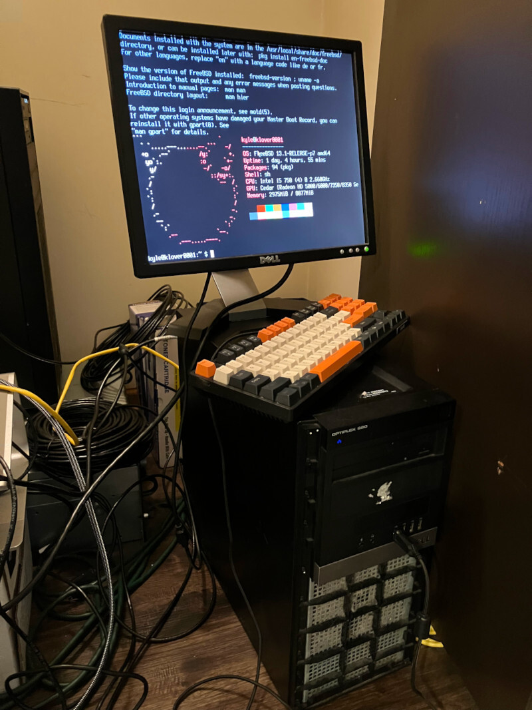
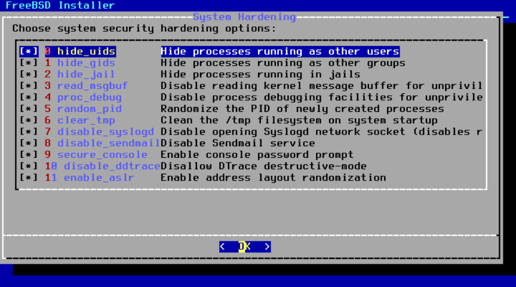
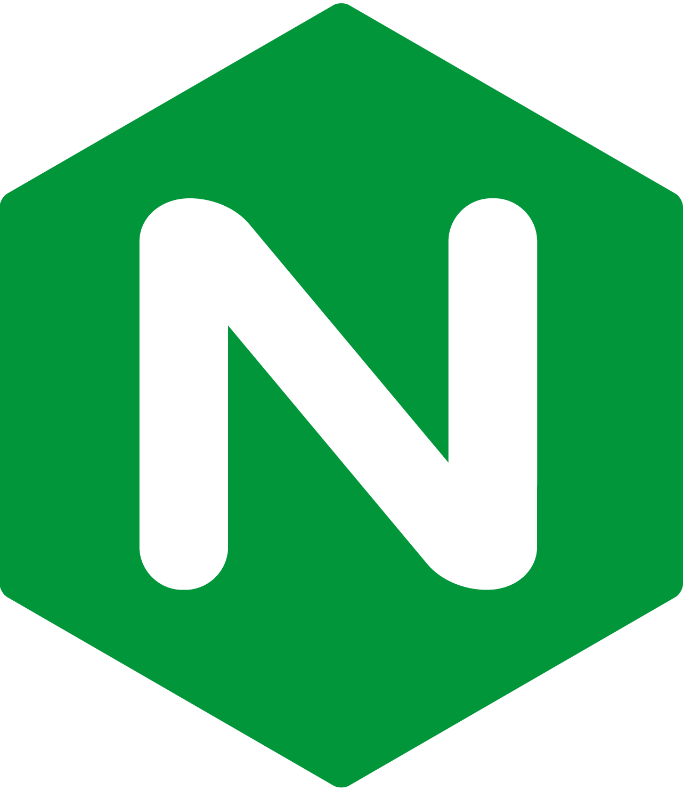

Self host a website in 2023
04 March 2023
Nowadays, most people will recommend that you "go to the cloud" for all of your computing needs. While this advice might work for a lot of businesses, the cloud can be pretty expensive, especially for individuals who don't need constant uptime for their blog. There's also free hosting options for static content, such as github.io, but you may quickly outgrow this approach once you start wanting dynamic content. If you don't mind spending a couple minutes per month keeping your server up to date, self hosting from home can be orders of magnitude less expensive than using a cloud service. It's also a great learning experience to find out for yourself what it actually takes to host a webserver!
What you'll need
What you need breaks down into these items. I'll go into detail for each one throughout this blog post.
- A computer
- An operating system
- Webserver software
- A static IP address
- A domain name
- A DNS record
- Port Forwarding
- TLS
- Closing thoughts
A computer
In order to host a webserver, first you'll need a server! Because we don't need anything too reliable, we don't need to get a computer with ECC memory and redundant power supplies. An old office PC will do!
I picked up my computer, a Dell OptiPlex 980, from a University surplus sale several years ago. This sweet rig packs a first generation i5-750 from 2009! While you don't want to play modern AAA games on this thing, it's more than enough to host my blog! I paid $20 for this beast back in the day, but you can easily find a more modern and much more powerful machine on ebay for less than $100. This machine has 4 x86_64 cores and a whopping 8 GiB of RAM. Let's see how much a similar machine on AWS will cost you...
The cheapest EC2 instance I could find that matches these specs is a c6g.xlarge, which costs $0.136 per hour. Granted, these are much newer cores than my machine has, but to reiterate, 3.6 GHz quad core i5 Skylake systems can be found on ebay for less than $100, so let's take that as a baseline. Also, it's important to note that when AWS sells you a vCPU, they really mean half of a CPU, since they enable hyperthreading, and treat a single logical core as a single CPU, so in actually a 4 vCPU machine from Amazon will really be a 2 core machine.
| Instance Name | On-Demand Hourly Rate | vCPU | Memory | Storage | Network Performance |
|---|---|---|---|---|---|
| c6g.xlarge | $0.136 | 4 | 8 GiB | EBS Only | Up to 10 Gigabit |
Calculating out total cost of ownership (TCO) over the course of a year, we can find the following:
Over the standard three year warranty period of enterprise computer hardware, that brings us to $3576. At that rate, you might as well buy yourself a nice shiny brand-new enterprise grade server!
An operating system
Any modern operating system will do. I gravitate towards UNIX flavors, so that's what I'll discuss today. While I'm a long time Linux user, I've been using FreeBSD more and more lately for servers. I like that ZFS comes with the base operating system, the installer has easy to configure security hardening, and its network stack performance has been blowing me away! This guide will mostly work for any Linux distro as well (and probably other BSDs), but this guide is targeted at FreeBSD specifically.
You can find many guides for installing FreeBSD. I recommend looking at the official documentation first. I also recommend literally every book by Michael W. Lucas, and in this particular case Absolute FreeBSD.
Towards the end of the FreeBSD installation, you'll come across a page asking which security hardening features you would like to enable. Since this operating system is going to be exposed to the public internet, I recommend selecting all of them!
There are a few more steps that we will want to take in order to secure our server. First, we want to require SSH keys and forbid using a password to SSH to the server. The reason for this is SSH keys are quite long. A lot longer than you could possibly remember for a password. SSH keys are also totally random data, which means that they have a lot higher entropy than sensible passwords, so it is much much harder to brute force an SSH key than it is a password. First create an ssh key pair on your primary computer (not the server!) then copy the public key to the server, i.e., ssh-copy-id. Next, add the following line to the end of /etc/ssh/sshd_config
Most SSH attempts happen on port 22. If we change the system's ssh port, we can block a lot of script kiddies and automated attacks that look for an easy target. Changing the port that SSH listens to is security by obscurity. Meaning that it is not good security by itself, but it will at least cut down on the amount of SSH attempts you'll see from unsophisticated attackers. Once again within /etc/ssh/sshd_config, change the line that reads Port 22 to instead have a different number, such as:
For these changes to take effect, restart the SSH service.
The last step in hardening that we'll do is to enable sshguard. sshguard is similar to Fail2Ban in Linux, and will protect your server from attackers using brute force to try to SSH to your system. You can install it as follows:
To enable sshguard, you'll have to add these line to your /etc/rc.conf file.
sshguard_enable="YES" sshguard_danger_thresh="30" sshguard_release_interval="600" sshguard_reset_interval="7200"
Then start the service:
Now that we've taken the reasonable steps to secure our system, let's move on to the reason we're doing this in the first place...setting up the webserver!
Webserver software
I'll be installing Nginx as the webserver. Nginx is flexible in that it can be used to serve up static content but also reverse proxy to other services that you have on your LAN! By using Nginx as a reverse proxy, you can keep a smaller attack footprint by having your other services less exposed to the internet.
To install nginx on FreeBSD, simply type:
From there, all you have to do to enable nginx on startup is to add the following line to /etc/rc.conf
Run the following to start nginx.
And that's all! If you go to your computer's IP address in a web browser, you should be greeted with the following screen.
You can set any HTML files that you want to serve in the directory /usr/local/www/nginx.
A static IP address
This step is highly dependent on which internet service provider (ISP) you have. I have Metronet, and this is their guide to getting a static IP address as a part of their service. For me, it only costs an additional $10 per month to have a static IP address. Well worth it compared to the costs of alternatives! The way how the process worked for me, is I called customer support to add a static IP address to my package. After 5 business days my IP address was allocated and ready to be used. I simply had to call customer support to do the cut over, and I updated my router's configuration to use the static IP address. I have a TP-Link router, so I followed this guide for how to do this on my router.
A domain name
Certainly the easiest part of this whole setup is getting a domain name. I used Google Domains for my website, but there are many other registrars to choose from. Go ahead and search for a domain in the search bar in the link to see if it's available. Then you simply purchase the domain name!
Once you have your domain name, you must now update Nginx to use that domain name as the server_name. Edit the file /usr/local/etc/nginx/nginx.conf and change server_name to your domain name.
A DNS record
After buying your domain name, you'll need to create a DNS entry to point to your webserver. Google makes that easy. When you click on your domain name in Google Domains, there is a menu bar on the left that has a tab called DNS. Here you can create an 'A' record with your IP address in the data field. Don't know what your IP address is? You can find that here!
Port Forwarding
You will need to forward your webserver to the open internet. In your router settings, forward port 80 for HTTP and port 443 for HTTPS traffic. You can also forward your SSH port too if you want to be able to SSH to your server when you're away from home. Be warned however that the more ports you forward, the more you're exposed to the open internet!
TLS
The last thing we'll need is to configure TLS. TLS is important to keep data encrypted while it is in transport to your server. If you do not enable TLS, then anyone viewing your website will get annoying messages from their webbrowser saying that your website is insecure. Getting a TLS certificate is free and easy. I'm using Let's Encrypt for mine. Navigate to Certbot and fill in the "Software" and "System" fields, then follow the instructions on the page. I made a cronjob in /etc/crontab to renew my certificate every month like so. Certbot will also configure Nginx appropriately to use your TLS certificate
# renew certificate @monthly certbot renew
Closing thoughts
It's really not hard to run your own webserver. It's also really cheap! Let's have another look at the cost breakdown. We found that an equivalent machine would cost $1192 per year from Amazon. Let's take a look at all of the expenses to see how the two options compare in the long run.
| Item | Yearly AWS Cost | Yearly Self-Host Cost | One-time Self-Host Cost |
|---|---|---|---|
| Computer | $1192 | $0 | $100 |
| Domain Name | $12 | $12 | $0 |
| Static IP address | $0 | $120 | $0 |
| DNS record | $6 | $0 | $0 |
| Total | $1210 | $132 | $100 |
We see that by self hosting, we only have to pay $132 per year. With an initial equipment purchase of $100, in the first year we only have to pay $232 by self hosting as opposed to $1210 for AWS. Over a 3 year period (a typical warranty period for IT equipment), we have an amortized cost of $165 per year by self hosting, and $3612 for AWS, literally an order of magnitude more expensive! For that much money, one could buy a really high end desktop or a mid-level server. One must do a careful cost analysis before jumping into the cloud. There are scenarios where renting computers from cloud vendors does not make sense economically.
About

This blog is about whatever I find interesting at this very moment. I'll post how-to articles on occasion and various lessons that I've learned in my career.
Me
I am a software developer from Des Moines Iowa. I graduated from the University of Iowa with a B.S. in Computer Science.
I am interested in math, compilers, and interpreters, and I always strive to understand how various systems work from the ground up.
The languages I use most often include
- C
- Rust
- Python
- C++
- Go
I like working in a UNIX or Linux environment.
Posts
- [2023-03-04] Self host a website in 2023
- [2022-07-04] Implementing Math Operations From Scratch
- [2020-10-25] Convolutions - Where Signal Processing and Machine learning Meet
- [2020-05-14] A tale of two servers, or why I shudder at the mention of race conditions
- [2020-05-13] Let's build a Lisp interpreter in Rust! (Part 1 - Lexing)
- [2020-05-10] OpenMP - Static or Dynamic Scheduling?